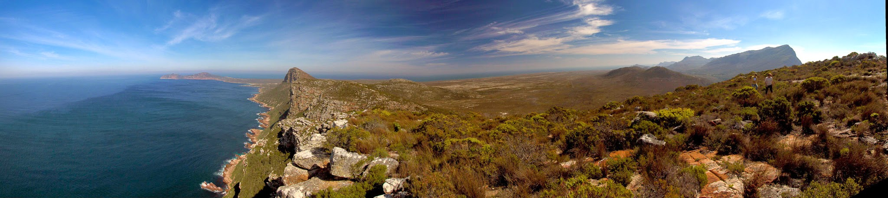

Hestir turns NASA technology
toward Earth’s biodiversity
Unlocking the patterns of life from the air
April 29, 2021
By Leigh Bernacchi, CITRIS UC Merced
Half a world away from California’s Central Valley is a place with similar climate but an unparalleled diversity of plants, marine animals and ecosystems. From deserts to shrubland to montane forests, the diversity of life in South Africa’s Greater Cape Floristic Region (GCFR) is the subject of NASA’s first biodiversity campaign led by University of California, Merced Professor Erin Hestir.
The program is a collaboration with Professor Adam Wilson at State University of New York at Buffalo and local partners in South Africa like the South African Ecological Observation Network and the South African Space Agency.
Hestir describes why the “Cape” is such an important place for biodiversity studies.
“The Cape contains two global biodiversity hotspots, meaning there’s a lot of different species in one area. Not to mention the ocean. It is third in the world for the number of unique marine animals that live nowhere else on Earth.”
Like California, the Cape’s wildlife and wilderness face pressures like human population increases, wildfire, water shortages, and climate change.
Where the Atlantic and Indian Oceans meet are dynamic marine ecosystems with species found nowhere else on earth. Photo Credit: A. Wilson
“The world is facing an extinction crisis. We are experiencing the sixth great extinction in the history of the Earth, with unprecedented rates of species loss,” said Hestir. “Understanding the diversity of life, what drives it and how it might change in the future is critical to maintaining and protecting life on Earth—for us and all creatures. NASA’s cutting-edge technology offers us the opportunity to measure biological diversity like never before to help solve this crisis. And it can’t happen soon enough.”
Adam Wilson, Professor of Geography and Environment and Sustainability at the University of Buffalo, is co-leading the program with Hestir, bringing 15 years of experience in southern Africa around biodiversity and ecosystem resilience.
“It’s a fascinating region, and I’m really excited to bring this state-of-the-art NASA technology together with the expertise of the South African and US research communities to move biodiversity science forward,” said Wilson.
The Marine, Freshwater, and Terrestrial Biodiversity Survey of the Cape (or BioSCape) campaign will deploy an unprecedented suite of instruments from two NASA aircraft to collect high resolution images of the Cape and its coast in 2023. The images will go beyond the color bands we can see in and include ultraviolet and thermal wavelengths as well as LIDAR, allowing researchers to create high-resolution maps of biodiversity, the physiological traits of organisms, and the three-dimensional structure of ecosystems.
Hestir serves as Associate Director of the Center for Information Technology Research in the Interest of Society (CITRIS) and leads the EDGE in Tech Initiative: Expanding Diversity and Gender Equity at UC Merced. She will bring her work back to share with UC Merced students in a class.
Diverse flora and fauna make the Cape a biodiversity hotspot. Photo Credit: A. Wilson
Currently, NASA is building the Science Team, who will work together to define the flight plans and conduct research projects supported by the mission. The team will be selected from the NASA Research Opportunities in Space and Earth Sciences (ROSES) applications. If you are interested in joining the interdisciplinary science team, apply by Aug 17, 2021.
The NASA Airborne Science Program provides a unique set of NASA supported aircraft that benefit the earth science community. These manned and unmanned aircraft carry the sensors that provide data to support and augment NASA spaceborne missions.